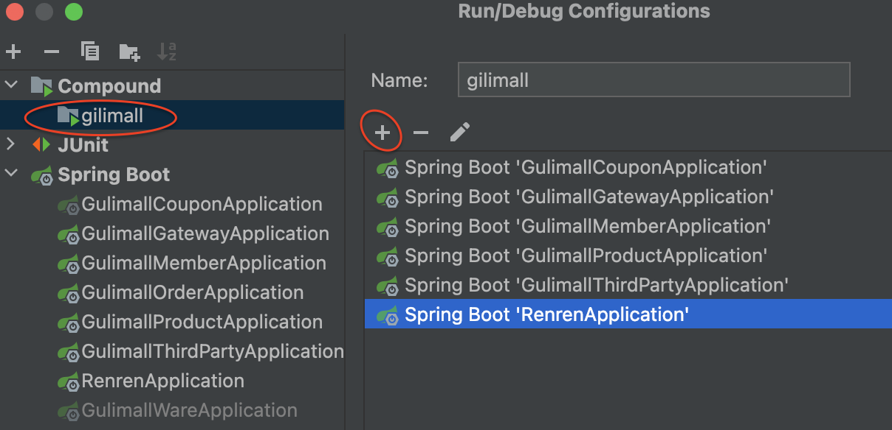
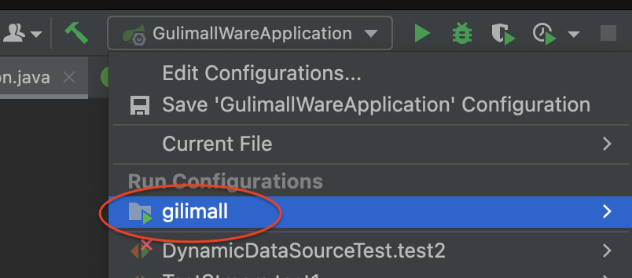

三级分类
导入商品服务数据
遇到如下问题：
1153 - Got a packet bigger than ‘max_allowed_packet’ bytes
是因为mysql默认读取的sql文件太小导致。
在MySQL安装目录下找到文件my.cnf，搜索[mysqld]，在其下面添加一句话
max_allowed_packet=1M
然后重启mysql。
在docker环境下这么操作：
# 查看msyql容器的挂载情况：
root@hcss-ecs-1b9f:~# docker inspect mysql
"Mounts": [
{
"Type": "bind",
"Source": "/mydata/mysql/conf",
"Destination": "/etc/mysql",
"Mode": "",
"RW": true,
"Propagation": "rprivate"
}
],
# 进入到conf目录，修改配置
root@hcss-ecs-1b9f:~# cd /mydata/mysql/conf
root@hcss-ecs-1b9f:/mydata/mysql/conf# ls
my.cnf
root@hcss-ecs-1b9f:/mydata/mysql/conf# vim my.cnf
# 重启 mysql容器
root@hcss-ecs-1b9f:/mydata/mysql/conf# docker restart mysql
递归树形结构获取数据
@Override
public List<CategoryEntity> listWithTree() {
//1、查出所有分类
List<CategoryEntity> entities = baseMapper.selectList(null);
//2、组装成父子的树形结构
//2.1）、找到所有的一级分类
List<CategoryEntity> level1Menus = entities.stream().filter(categoryEntity ->
categoryEntity.getParentCid() == 0 // 过滤出一级分类
).map((menu)->{// 再找出一级的子类
menu.setChildren(getChildrens(menu,entities));
return menu;
}).sorted((menu1,menu2)->{
return (menu1.getSort()==null?0:menu1.getSort()) - (menu2.getSort()==null?0:menu2.getSort());
}).collect(Collectors.toList());
return level1Menus;
}
private List<CategoryEntity> getChildrens(CategoryEntity root,List<CategoryEntity> all){
List<CategoryEntity> children = all.stream()
// 在所有菜单中，过滤出对应父类的子类
//.filter(categoryEntity -> categoryEntity.getParentCid() == root.getCatId())
.filter(categoryEntity -> categoryEntity.getParentCid().equals(root.getCatId()))
.map(categoryEntity -> {
//1、找到子菜单
categoryEntity.setChildren(getChildrens(categoryEntity,all));
return categoryEntity;
}).sorted((menu1,menu2)->{
//2、菜单的排序
return (menu1.getSort()==null?0:menu1.getSort()) - (menu2.getSort()==null?0:menu2.getSort());
}).collect(Collectors.toList());
return children;
}
[!WARNING]
categoryEntity.getParentCid() == root.getCatId()比较的是两个Long类型。这时，==比较的是地址值@Test public void test2(){ Long a =888L; Long b =888L; Long c = 25L; Long d = 25L; if(a==b){ // 不相等 System.out.println("相等"); }else { System.out.println("不相等"); } if(c==d){// 相等 System.out.println("相等"); }else { System.out.println("不相等"); } }LongCache会预先缓存 [-128,127] 范围内的数，通过缓存频繁请求的值代来更好的空间和时间性能，当数据超出此范围，则new一个Long对象；
“==”是比较的地址，超出此范围的数据地址不一致，所以范围内的比较是true，范围外的数据是false。
另外需要在实体类中，再添加一个字段
@TableField(exist=false)
private List<CategoryEntity> children;
新增菜单
新增商品系统（一级菜单），如图：

新增的数据会存在gulimall_admin的sys_menu里面
新增分类维护（二级菜单）：
当我们点击分类维护时，访问的路径为：http://localhost:8001/#/product-category
系统的运行规则是这样的：
角色管理的菜单URL为：sys/role
当我们访问角色管理菜单的时候，访问路径为：
http://localhost:8001/#/sys-role。并且会去访问
src/views/modules/sys/role.vue这个组件
所以，对于新增的分类维护页面，我们需要新建一个product目录和category.vue文件
Prettier 与 ESLint
Prettier：格式化代码
ESLint：代码校验
prettier的常用设置，可放入settings.json文件中：
// prettier配置
"prettier.configPath": "C:\\Users\\Luck\\.prettierrc", // prettierrc文件目录
"eslint.alwaysShowStatus": true, // 总是显示eslint状态
"prettier.printWidth": 120, // 超过最大值换行
"prettier.tabWidth": 2, // 缩进字节数
"prettier.useTabs": false, // 缩进不使用tab，使用空格
"prettier.semi": true, // 句尾添加分号
"prettier.singleQuote": true, // 使用单引号代替双引号
"prettier.proseWrap": "preserve", // 默认值。因为使用了一些折行敏感型的渲染器（如GitHub comment）而按照markdown文本样式进行折行
"prettier.arrowParens": "avoid", // (x) => {} 箭头函数参数只有一个时是否要有小括号。avoid：省略括号
"prettier.bracketSpacing": true, // 在对象，数组括号与文字之间加空格 "{ foo: bar }"
"prettier.endOfLine": "auto", // 结尾是 \n \r \n\r auto
"prettier.eslintIntegration": false, //不让prettier使用eslint的代码格式进行校验
"prettier.htmlWhitespaceSensitivity": "ignore",
"prettier.ignorePath": ".prettierignore", // 不使用prettier格式化的文件填写在项目的.prettierignore文件中
"prettier.BracketSameLine": false, // 在jsx中把'>' 是否单独放一行
"prettier.jsxSingleQuote": false, // 在jsx中使用单引号代替双引号
// "prettier.parser": "babylon", // 格式化的解析器，默认是babylon
"prettier.requireConfig": false, // Require a 'prettierconfig' to format prettier
"prettier.stylelintIntegration": false, //不让prettier使用stylelint的代码格式进行校验
"prettier.trailingComma": "none", // 属性值es5表示在对象或数组最后一个元素后面是否加逗号（在ES5中加尾逗号）
"prettier.tslintIntegration": false, // 不让prettier使用tslint的代码格式进行校验
prettier的失效问题：
由于prettier插件优先使用项目根目录下的editorconfig配置文件，所以在vscode中怎么配置有没有用
prettier在保存的时候格式化代码：
ESLint和Prettier起冲突：禁用掉ESLint某些校验，因为有些校验确实太繁琐了。
在.eslintrc.js文件里做如下配置：
rules: {
// allow async-await
'generator-star-spacing': 'off',
// allow debugger during development
'no-debugger': process.env.NODE_ENV === 'production' ? 'error' : 'off',
"space-before-function-paren": 0, // 个人配置，0表示不启用
"no-irregular-whitespace":0 // 个人配置，0表示不启用
}
向后台发送请求并配置网关
网关配置
发送请求
getMenus() {
this.$http({
url: this.$http.adornUrl('/product/category/list/tree'),
method: 'get'// get请求还是post请求等
}).then(({ data }) => {
console.log('成功获取到菜单数据...', data.data)
this.menus = data.data
})
},
在这个文件中：src/utils/httpRequest.js
这里创建了axios
const http = axios.create({
timeout: 1000 * 30,
withCredentials: true,
headers: {
'Content-Type': 'application/json; charset=utf-8'
}
})
这个方法在拼接url地址：
/**
* 请求地址处理
* @param {*} actionName action方法名称
*/
http.adornUrl = (actionName) => {
// 非生产环境 && 开启代理, 接口前缀统一使用[/proxyApi/]前缀做代理拦截!
return (process.env.NODE_ENV !== 'production' && process.env.OPEN_PROXY ? '/proxyApi/' : window.SITE_CONFIG.baseUrl) + actionName
}
最终我们向后台发送的请求为：http://localhost:8080/renren-fast/product/category/list/tree
我们期望方式的请求为：http://localhost:10000/product/category/list/tree
前端项目定义的基础路径在：static/config/index.js里面
// api接口请求地址
// window.SITE_CONFIG['baseUrl'] = 'http://localhost:8080/renren-fast';
window.SITE_CONFIG['baseUrl'] = 'http://localhost:88/api' // 改成网关端口
改成网关端口，让网关同意路由到不同服务上。
当改成网关之后，不仅要重新登录，而且验证码也没了：
获取验证码的请求：http://localhost:88/captcha.jpg?uuid=e5eecf90-2c2d-4fd9-81c5-d43c7e2b4faa
验证码功能是在renern-fast项目。这需要renren-fast项目，注册到nacos，接受网关的管理
注册到nacos服务器
配置应用名
配置nacos的ip地址
映入nacos的依赖
@EnableDiscoveryClient
配置负载均衡/路由(gateway项目)
spring: cloud: gateway: routes: - id: admin_route uri: lb://renren-fast # lb表示负载均衡， predicates: - Path=/api/** # 只要有api这个前缀，就路由到 renren-fast 这个项目重新启动项目，但是仍然没有出现验证码，原因如下
http://localhost:88/api/captcha.jpg?uuid=b68205dd-ea18-4309-873f-0f1c97b664b1这个请求有
/api，会被路由到renren-fast项目，项目路径会变为：
http://localhost:8080(由于这个配置：uri: lb://renren-fast)+/api/captcha.jpg但真正正确的路径为：
http://localhost:8080/renren-fast/captcha.jpg
需要从写路径
spring: cloud: gateway: routes: - id: admin_route uri: lb://renren-fast # lb表示负载均衡， predicates: - Path=/api/** # 只要有api这个前缀，就路由到 renren-fast 这个项目 filters: # 意思是：把/api/... 重写为 /renren-fast/... - RewritePath=/api/(?<segment>.*),/renren-fast/$\{segment}重写之后，验证码出现了
但是仍然登录失败，以下为控制台信息。是由于跨域问题
Access to XMLHttpRequest at 'http://localhost:88/api/sys/login' from origin 'http://localhost:8001' has been blocked by CORS policy: Response to preflight request doesn't pass access control check: No 'Access-Control-Allow-Origin' header is present on the requested resource.
跨域
跨域：指的是浏览器不能执行其他网站的脚本。它是由浏览器的同源策略造成的，是浏览器对javascript施加的安全限制。
同源策略：是指协议，域名，端口都要相同，其中有一个不同都会产生跨域;
非简单请求(PUT、DELETE)等，需要先发送预检请求
解决跨域的方式：
使用Nginx部署为同一域
配置当前请求允许跨域：添加响应头
Access-Control-Allow-Origin:支持哪些来源的请求跨域。
Access-Control-Allow-Methods:支持哪些方法跨域
Access-Control-Allow-Credentials:跨域请求默认不包含cookie，设置为true可以包含cookie。
Access-Control-Expose-Headers:跨域请求暴露的字段
- CORS请求时，XMLHttpRequest对象的getResponseHeader()方法只能拿到6个基本字段:Cache-Control、Content-Language、Content-Type、Expires、Last-Modified、Pragma.如果想拿到其他字段，就必须在Access-Control-Expose-Headers里面指定。
Access-Control-Max-Age:表明该响应的有效时间为多少秒。在有效时间内，浏览器无须为同一请求再次发起预检请求。请注意，浏览器自身维护了一个最大有效时间，如果该首部字段的值超过了最大有效时间，将不会生效，
import org.springframework.context.annotation.Bean;
import org.springframework.context.annotation.Configuration;
import org.springframework.web.cors.CorsConfiguration;
import org.springframework.web.cors.reactive.CorsWebFilter;
// 使用reactive的
import org.springframework.web.cors.reactive.UrlBasedCorsConfigurationSource;
@Configuration
public class GulimallCorsConfiguration {
@Bean
public CorsWebFilter corsWebFilter(){
// UrlBasedCorsConfigurationSource 配置跨域的配置信息
UrlBasedCorsConfigurationSource source = new UrlBasedCorsConfigurationSource();
CorsConfiguration corsConfiguration = new CorsConfiguration();
//1、配置跨域: * 表示所有
corsConfiguration.addAllowedHeader("*");
corsConfiguration.addAllowedMethod("*");
corsConfiguration.addAllowedOrigin("*");
// 是否允许cookie信息跨域，true表示允许
corsConfiguration.setAllowCredentials(true);
// `/**` 表示任意路径都需要跨域配置
source.registerCorsConfiguration("/**",corsConfiguration);
return new CorsWebFilter(source);
}
}
配置完之后还是报错：
Access to XMLHttpRequest at 'http://localhost:88/api/sys/login' from origin 'http://localhost:8001' has been blocked by CORS policy: The 'Access-Control-Allow-Origin' header contains multiple values 'http://localhost:8001, http://localhost:8001', but only one is allowed.
观察响应头发现，GulimallCorsConfiguration里面配置的都生效了，但是有重复的内容
这是由于renren-fast也配置了跨域，把它注释掉：
//@Configuration
public class CorsConfig implements WebMvcConfigurer {
@Override
public void addCorsMappings(CorsRegistry registry) {
registry.addMapping("/**")
.allowedOrigins("*")
.allowCredentials(true)
.allowedMethods("GET", "POST", "PUT", "DELETE", "OPTIONS")
.maxAge(3600);
}
}
最后正常进入后台管理系统
树形显示数据
给gulimall-product注册nacos
nacos依赖
创建命名空间
配置bootstrap文件，可以是yaml的，也可以是properties
配置中心的地址+注册中心的地址：bootstrap文件。建议放在本地
@EnableDiscoveryClient
配置路由：
注意路由的顺序：先过滤
Path=/api/product/**（范围更小），再过滤Path=/api/**（范围更大）。否则this.$http.adornUrl('/product/category/list/tree')会被转发到renren-fast模块spring: cloud: gateway: routes: - id: product_route uri: lb://gulimall-product predicates: - Path=/api/product/** filters: # /api/... --> /..(去掉api) - RewritePath=/api/(?<segment>.*),/$\{segment} - id: admin_route uri: lb://renren-fast # lb表示负载均衡， predicates: - Path=/api/** # 只要有api这个前缀，就路由到 renren-fast 这个项目 filters: # 意思是：把/api/... 重写为 /renren-fast/... - RewritePath=/api/(?<segment>.*),/renren-fast/$\{segment}
配置逻辑删除
逻辑删除的后端配置：
全局配置
mybatis-plus: mapper-locations: classpath:/mapper/**/*.xml global-config: db-config: id-type: auto logic-delete-value: 1 #逻辑删除：1表示删除 logic-not-delete-value: 0 # 逻辑删除：0表示不删除在entity上配置逻辑删除的属性，加
@TableLogic@TableLogic private Integer showStatus;如果我们希望和全局配置不一致，可以怎么设置
// 配置后：1表示不删除，0表示删除 @TableLogic(value = "1",delval = "0") private Integer showStatus;
拖拽功能
draggable属性
开启拖拽功能：添加draggable属性，ture表示开启拖拽功能
并且加入开关功能
<el-switch v-model="draggable" active-text="开启拖拽" inactive-text="关闭拖拽"></el-switch>
data() {
return {
draggable: false,
}
},
draggable默认为false（不可以拖拽，开关默认关闭），打开开关，会使draggable变为true（可以拖拽）。这是v-model的作用。
allow-drop
是一个函数：Function(draggingNode, dropNode, type)
- draggingNode：当前拖拽的节点
- type：当前节点被放定的位置
- dropNode：和被拖节点交换位置的节点
- Return true：可以拖拽到这个位置，Return false：不可以拖拽到这个位置
拖拽时判定目标节点能否被放置。
type参数有三种情况：- ‘prev’：放置在目标节点前，目标节点为
dropNode - ‘inner’ ：插入至目标节点，目标节点为
dropNode - ‘next’，放置在目标节点后，目标节点为
dropNode
- ‘prev’：放置在目标节点前，目标节点为
使用：
:allow-drop="allowDrop"。绑定一个函数allowDrop
如图所示：
T3.2放在整车上面，那么draggingNode=T3.2，type=prev，dropNode=整车
如果T2放在T3里面，那么draggingNode=T2，type=inner，dropNode=T3
校验总层级不能大于3
<el-tree
:allow-drop="allowDrop"
>
// 判断是否可以拖拽到这个位置
allowDrop(draggingNode, dropNode, type) {
// debugger
// 1、被拖动的当前节点以及所在的父节点总层数不能大于3
// 1）、被拖动的当前节点总层数
// console.log(draggingNode)
console.log('------1111---------')
console.log('draggingNode:', draggingNode.level, draggingNode.data.name)
console.log('dropNode:', dropNode.level, dropNode.data.name)
console.log('type:', type)
// 先把maxLevel设置为初始值
this.maxLevel = 0
// 计算 被拖动到节点 到 子节点最深的地方 一共有几层
// 计算子节点的深度
this.countNodeLevel(draggingNode)
// 拖动节点 ---> 最深子节点 的 长度
// --- 比如 拖动节点 level = 2 ， 最深子节点 = 3
// --- 整个被拖动的有两层
let deep = Math.abs(this.maxLevel - draggingNode.level) + 1
console.log('深度：', deep)
// this.maxLevel
if (type === 'inner') {
return deep + dropNode.level <= 3
} else {
return deep + dropNode.parent.level <= 3
}
},
// 找出当前子节点最大深度：
countNodeLevel(node) {
// 找到所有子节点，求出最大深度
if (node.childNodes !== null && node.childNodes.length > 0) {
// 如果存在子节点：就遍历子节点
for (let i = 0; i < node.childNodes.length; i++) {
this.maxLevel = node.childNodes[i].level
this.countNodeLevel(node.childNodes[i])
}
} else {
// 如果不存在子节点：那么最大层级maxLevel就是其本身
this.maxLevel = node.level
}
},
node-drop
node-drop：拖拽成功完成时触发的事件。handleDrop(draggingNode, dropNode, dropType, ev)
- draggingNode：被拖拽节点对应的 Node
- dropNode：和被拖拽节点交换位置的节点
- dropType：被拖拽节点的放置位置（before、after、inner）
- event：这个目前没什么用
handleDrop的前三个参数和allowDrop的三个参数的意义是一致的
在业务上，拖拽会改变如下内容：
- parent_cid：会改变上一级Id
- cat_level：层级
- sort：会改变顺序（before和after）
代码关键点讲解
<el-tree
@node-drop="handleDrop"
>
handleDrop(draggingNode, dropNode, dropType, ev) {
console.log('draggingNode', draggingNode)
console.log('dropNode', dropNode)
console.log('dropType', dropType)
console.log('event', ev)
// 1、当前节点最新的父节点id
let pCidOne = 0
let siblings = null
if (dropType === 'before' || dropType === 'after') {
// draggingNode的父节点
pCidOne = dropNode.parent.data.catId === undefined ? 0 : dropNode.parent.data.catId
siblings = dropNode.parent.childNodes // draggingNode的同级的所有node
} else {
pCidOne = dropNode.data.catId // draggingNode的父节点
siblings = dropNode.childNodes // draggingNode的同级的所有node
}
// 所有父节点的信息：是为了实现其他功能的
this.pCid.push(pCidOne)
// 2、当前拖拽节点的最新顺序，
for (let i = 0; i < siblings.length; i++) {
if (siblings[i].data.catId === draggingNode.data.catId) {
// 如果遍历的是当前正在拖拽的节点：修改sort，parentCid 和 catLevel
debugger
let catLevel = draggingNode.level
//
if (siblings[i].level !== draggingNode.level) {
// 当前节点的层级发生变化
catLevel = siblings[i].level
// 修改他子节点的层级：catLevel
this.updateChildNodeLevel(siblings[i])
}
this.updateNodes.push({
catId: siblings[i].data.catId,
sort: i, // 初始的sort都是0，在这里我们根据用户的拖拽给category排序
parentCid: pCidOne,
catLevel: catLevel
})
} else {
// 如果遍历的节点不是当前拖拽的节点: 修改sort
this.updateNodes.push({ catId: siblings[i].data.catId, sort: i })
}
}
// 3、当前拖拽节点的最新层级
console.log('updateNodes', this.updateNodes)
},
updateChildNodeLevel(node) {
if (node.childNodes.length > 0) {
for (let i = 0; i < node.childNodes.length; i++) {
var cNode = node.childNodes[i].data
this.updateNodes.push({
catId: cNode.catId,
// node中的level是随着拖拽的变化而变化的
catLevel: node.childNodes[i].level
})
this.updateChildNodeLevel(node.childNodes[i])
}
}
},
siblings和draggingNode的关系：siblings是draggingNode同一层级下的所有node的集合
通过三个例子理解siblings
情况一：t1和t2相互交换位置，Type=“after”或者“before”
siblings[i].level=draggingNode.level=2parentCid也不会变
同一级的sort会变化
情况二：把t3放在“整车”的前面或者后面，Type=“after”或者“before”
siblings[i].level=1≠draggingNode.level=2现在t3和“整车”是同一级，那么parentCid，sort和catLevel都会变，
情况三：把t2.2放入t3里面，Type=inner，
siblings[i].level=draggingNode.level=2catLevel不变，sort会变
批量修改拖拽后的效果
<el-switch v-model="draggable" active-text="开启拖拽" inactive-text="关闭拖拽"></el-switch>
<el-button v-if="draggable" @click="batchSave">批量保存</el-button>
<!-- default-expanded-keys 设置默认展开菜单 -->
<el-tree
:default-expanded-keys="expandedKey"
>
data() {
return {
expandedKey: [],
}
},
batchSave() {
this.$http({
url: this.$http.adornUrl('/product/category/update/sort'),
method: 'post',
data: this.$http.adornData(this.updateNodes, false)
}).then(({ data }) => {
this.$message({
message: '菜单顺序等修改成功',
type: 'success'
})
// 刷新出新的菜单
this.getMenus()
// 设置需要默认展开的菜单
this.expandedKey = this.pCid
this.updateNodes = []
this.maxLevel = 0
// this.pCid = 0;
})
},
其中this.expandedKey = this.pCid中的pCid，是在上一个步骤中的这段代码this.pCid.push(pCidOne)中设置的。
其他
其他的，比如正删改查，或者批量删除，树形图的显示，都可以去看代码和比较element-ui看
商品服务
逆向工程生成前端代码
新增和修改是需要校验权限的：isAuth
<el-form-item>
<el-button @click="getDataList()">查询</el-button>
<el-button v-if="isAuth('product:brand:save')" type="primary" @click="addOrUpdateHandle()">新增</el-button>
<el-button
v-if="isAuth('product:brand:delete')"
type="danger"
@click="deleteHandle()"
:disabled="dataListSelections.length <= 0"
>
批量删除
</el-button>
</el-form-item>
isAuth是在src/utils/index.js里面定义的。
出于开发的需要，把这些点注释掉
/**
* 是否有权限
* @param {*} key
*/
export function isAuth(key) {
// return JSON.parse(sessionStorage.getItem('permissions') || '[]').indexOf(key) !== -1 || false
return true
}
使用开关组件
展示栏：
// :active-value="1" 启用，赋予的值是1；:inactive-value="0"不启用，赋予的值是0
// @change="updateBrandStatus(scope.row)" 开关每发生变化，就会调用updateBrandStatus
// v-model="scope.row.showStatus" 这里的socpe就在整行的数据
<el-table-column prop="showStatus" header-align="center" align="center" label="显示状态">
<template slot-scope="scope">
<el-switch
v-model="scope.row.showStatus"
active-color="#13ce66"
inactive-color="#ff4949"
:active-value="1"
:inactive-value="0"
@change="updateBrandStatus(scope.row)"
></el-switch>
</template>
</el-table-column>
updateBrandStatus(data) {
console.log('最新信息', data)
let { brandId, showStatus } = data
//发送请求修改状态
this.$http({
url: this.$http.adornUrl('/product/brand/update/status'),
method: 'post',
data: this.$http.adornData({ brandId, showStatus }, false)
}).then(({ data }) => {
this.$message({
type: 'success',
message: '状态更新成功'
})
})
},
新增修改栏：
<el-form-item label="显示状态" prop="showStatus">
<el-switch
v-model="dataForm.showStatus"
active-color="#13ce66"
inactive-color="#ff4949"
:active-value="1"
:inactive-value="0"
></el-switch>
</el-form-item>
文件上传功能
文件上传的整体思路
为什么需要云存储
单体应用：将文件上传到应用的服务器
分布式情况下
如果只上传到本地服务器就会有问题。因为其他服务器无法共享文件
解决方式：把文件统一放在同一个服务器下。其他服务想使用对应文件，就只需要调用该服务器。
阿里云对象存储两种方式
普通上传：用户 通过浏览器/手机应用 将图片上传到应用服务器，应用服务通过在将图片上传到OSS服务器，OSS接收图片并存储后，将存储地址返回给应用服务器，应用服务器在返回给用户。
这种方式的缺点：需要通过自己的服务器，占用服务器带宽，增加服务器的压力
优点：不会暴露密码信息，比较安全
服务端签名后直传：
- 将OSS的账户密码存在应用服务器里面
- 用户向服务器发请求，获取Policy
- 服务器利用阿里云的账户和密码，生成一个防伪签名，里面包含了访问阿里云的令牌和地址等信息
- 用户带着防伪签名，将文件直接上传到OSS
后端：整合阿里云的OSS
最新的操作指南应该参考官方文档
使用SpringCloudAlibaba封装的OSS：官方文档
开通阿里云对象存储
再创建一个模块：
gulimall-third-party。这个模块主要负责第三方服务，如：对象存储、发送短信、查物流。引入对象村粗的依赖：
<dependency> <groupId>com.alibaba.cloud</groupId> <artifactId>spring-cloud-starter-alicloud-oss</artifactId> </dependency>其里面引入了OSS的依赖：
<dependency> <groupId>com.aliyun.oss</groupId> <artifactId>aliyun-sdk-oss</artifactId> </dependency>第三方服务注册地注册中心
配置阿里云对象存储的相关信息
spring: cloud: alicloud: access-key: 阿里云生成 secret-key: 阿里云生成 oss: endpoint: oss-cn-beijing.aliyuncs.com bucket: gulimall-hello服务端签名直传
代码
@RestController public class OssController { @Autowired OSS ossClient; @Value("${spring.cloud.alicloud.oss.endpoint}") private String endpoint; @Value("${spring.cloud.alicloud.oss.bucket}") private String bucket; @Value("${spring.cloud.alicloud.access-key}") private String accessId; @RequestMapping("/oss/policy") public R policy() { //https://gulimall-hello.oss-cn-beijing.aliyuncs.com/hahaha.jpg String host = "https://" + bucket + "." + endpoint; // host的格式为 bucketname.endpoint // callbackUrl为 上传回调服务器的URL，请将下面的IP和Port配置为您自己的真实信息。 // String callbackUrl = "http://88.88.88.88:8888"; String format = new SimpleDateFormat("yyyy-MM-dd").format(new Date()); String dir = format + "/"; // 用户上传文件时指定的前缀。 Map<String, String> respMap = null; try { long expireTime = 30; long expireEndTime = System.currentTimeMillis() + expireTime * 1000; Date expiration = new Date(expireEndTime); PolicyConditions policyConds = new PolicyConditions(); policyConds.addConditionItem(PolicyConditions.COND_CONTENT_LENGTH_RANGE, 0, 1048576000); policyConds.addConditionItem(MatchMode.StartWith, PolicyConditions.COND_KEY, dir); // 在这里 生成 签名 String postPolicy = ossClient.generatePostPolicy(expiration, policyConds); byte[] binaryData = postPolicy.getBytes("utf-8"); String encodedPolicy = BinaryUtil.toBase64String(binaryData); String postSignature = ossClient.calculatePostSignature(postPolicy); respMap = new LinkedHashMap<String, String>(); respMap.put("accessid", accessId); respMap.put("policy", encodedPolicy); respMap.put("signature", postSignature); respMap.put("dir", dir); respMap.put("host", host); respMap.put("expire", String.valueOf(expireEndTime / 1000)); // respMap.put("expire", formatISO8601Date(expiration)); } catch (Exception e) { // Assert.fail(e.getMessage()); System.out.println(e.getMessage()); } return R.ok().put("data",respMap); } }
前端：上传组件
使用el-upload封装singleUpload组件
- src/components/upload/singleUpload.vue
- src/components/upload/policy.js：发送给
/thirdparty/oss/policy获取Policy
使用singleUpload组件
src/views/modules/product/brand-add-or-update.vue
引入singleUpload
import SingleUpload from '@/components/upload/singleUpload' export default { components: { SingleUpload }, // 引入 data() {}, methods: {} }使用：
<el-form-item label="品牌logo地址" prop="logo"> <single-upload v-model="dataForm.logo"></single-upload> </el-form-item>解决跨域问题：需要登录OSS管理控制台进行设置。具体设置可参考文档
校验数据
前端：表单校验
<template>
<el-dialog :title="!dataForm.id ? '新增' : '修改'" :close-on-click-modal="false" :visible.sync="visible">
<!-- :rules="dataRule" 绑定校验规则 -->
<el-form
:model="dataForm"
:rules="dataRule"
ref="dataForm"
@keyup.enter.native="dataFormSubmit()"
label-width="140px"
>
<el-form-item label="品牌名" prop="name">
<el-input v-model="dataForm.name" placeholder="品牌名"></el-input>
</el-form-item>
<el-form-item label="检索首字母" prop="firstLetter">
<el-input v-model="dataForm.firstLetter" placeholder="检索首字母"></el-input>
</el-form-item>
<el-form-item label="排序" prop="sort">
<!-- v-model.number 指代这里接收的是一个number（数字） -->
<el-input v-model.number="dataForm.sort" placeholder="排序"></el-input>
</el-form-item>
</el-form>
<span slot="footer" class="dialog-footer">
<el-button @click="visible = false">取消</el-button>
<el-button type="primary" @click="dataFormSubmit()">确定</el-button>
</span>
</el-dialog>
</template>
<script>
import SingleUpload from '@/components/upload/singleUpload'
export default {
components: { SingleUpload },
data() {
return {
visible: false,
dataForm: {
brandId: 0,
name: '',
logo: '',
descript: '',
showStatus: 1,
firstLetter: '',
sort: 0
},
dataRule: {
// 自带的校验规则：required: true 意思是非空
name: [{ required: true, message: '品牌名不能为空', trigger: 'blur' }],
firstLetter: [
// 首字母
{
// validator 表示自定义校验规则
validator: (rule, value, callback) => {
if (value === '') {
callback(new Error('首字母必须填写'))
} else if (!/^[a-zA-Z]$/.test(value)) {
callback(new Error('首字母必须a-z或者A-Z之间'))
} else {
callback() // 校验通过 自定义校验 callback 必须被调用
}
},
trigger: 'blur'
}
],
sort: [
{
// validator 表示自定义校验规则
validator: (rule, value, callback) => {
if (value === '') {
callback(new Error('排序字段必须填写'))
} else if (!Number.isInteger(value) || value < 0) {
callback(new Error('排序必须是一个大于等于0的整数'))
} else {
callback() // 校验通过 自定义校验 callback 必须被调用
}
},
trigger: 'blur'
}
]
}
}
}
}
</script>
后端：JSR303+统一异常处理
简单使用
给Bean添加校验注解:javax.validation.constraints，并定义自己的message提示。如果自己不给出message提示，默认使用的是
ValidationMessages.properties，这个文件下的提示/** * 品牌id */ @NotNull(message = "修改必须指定品牌id") @TableId private Long brandId; /** * 品牌logo地址 */ @NotBlank(groups = {AddGroup.class}) @URL(message = "logo必须是一个合法的url地址") private String logo; /** * 检索首字母：@Pattern 可以传正则表达式，来自定义自己的规则 */ @Pattern(regexp="^[a-zA-Z]$",message = "检索首字母必须是一个字母") private String firstLetter;开启校验功能
@Valid。校验错误以后会有默认的响应。// @Valid 表示对 BrandEntity 这个bean使用校验注解 @RequestMapping("/save") public R save(@Valid @RequestBody BrandEntity brand){ brandService.save(brand); return R.ok(); }给校验的bean后紧跟一个BindingResult，就可以获取到校验的结果，然后拼装我们自己的响应
// @Valid 表示对 BrandEntity 这个bean使用校验注解 @RequestMapping("/save") public R save(@Valid @RequestBody BrandEntity brand,BindingResult result){ // 判断是否有错误 if(result.hasErrors()){ Map<String,String> map = new HashMap<>(); //1、获取校验的错误结果 result.getFieldErrors().forEach((item)->{ //FieldError 获取到错误提示 String message = item.getDefaultMessage(); //获取错误的属性的名字 String field = item.getField(); // 拼装自己的响应 map.put(field,message); }); return R.error(400,"提交的数据不合法").put("data",map); }else { } brandService.save(brand); return R.ok(); }
统一的异常处理
编写异常处理类，使用
@ControllerAdvice使用
@ExceptionHandler标注方法可以处理的异常。/** * 集中处理所有异常 */ @Slf4j //@ResponseBody // 返回Json格式的数据 // basePackages= "xxxx":表示在xxxx包下的异常，都由GulimallExceptionControllerAdvice来处理 //@ControllerAdvice(basePackages = "com.atguigu.gulimall.product.controller") /*@RestControllerAdvice = @ResponseBody + @ControllerAdvice*/ @RestControllerAdvice(basePackages = "com.atguigu.gulimall.product.controller") public class GulimallExceptionControllerAdvice { // 里面的value 表示可以处理什么样的异常 @ExceptionHandler(value= MethodArgumentNotValidException.class) public R handleVaildException(MethodArgumentNotValidException e){ log.error("数据校验出现问题{}，异常类型：{}",e.getMessage(),e.getClass()); BindingResult bindingResult = e.getBindingResult(); Map<String,String> errorMap = new HashMap<>(); bindingResult.getFieldErrors().forEach((fieldError)->{ errorMap.put(fieldError.getField(),fieldError.getDefaultMessage()); }); return R.error(BizCodeEnume.VAILD_EXCEPTION.getCode(),BizCodeEnume.VAILD_EXCEPTION.getMsg()) .put("data",errorMap); } // 默认先处理具体的，再处理范围更大的，所有 handleException 会后执行 @ExceptionHandler(value = Throwable.class) public R handleException(Throwable throwable){ log.error("错误：",throwable); return R.error(BizCodeEnume.UNKNOW_EXCEPTION.getCode(),BizCodeEnume.UNKNOW_EXCEPTION.getMsg()); } }在common模块里统一编写枚举类，自定义错误码
/** * 错误码和错误信息定义类 * 1. 错误码定义规则为5为数字 * 2. 前两位表示业务场景，最后三位表示错误码。例如：100001。10:通用 001:系统未知异常 * 3. 维护错误码后需要维护错误描述，将他们定义为枚举形式 * 错误码列表： * 10: 通用 * 001：参数格式校验 * 11: 商品 * 12: 订单 * 13: 购物车 * 14: 物流 */ public enum BizCodeEnume { UNKNOW_EXCEPTION(10000,"系统未知异常"), VAILD_EXCEPTION(10001,"参数格式校验失败"); private int code; private String msg; BizCodeEnume(int code, String msg){ this.code = code; this.msg = msg; } public int getCode() { return code; } public String getMsg() { return msg; } }分组校验
如果不进行分组校验，那么新增和修改操作，校验的字段和校验的内容都会是一样的
新增group值
/** * 品牌id */ // 修改的时候会校验 NotNull，要求不为空 @NotNull(message = "修改必须指定品牌id",groups = {UpdateGroup.class}) // 新增的时候会校验 Null，要求为空 @Null(message = "新增不能指定id",groups = {AddGroup.class}) @TableId private Long brandId; /** * 品牌logo地址 * 新增要求：至少要有一个字符，并且符合URL地址 * 修改只要符合URL地址 */ @NotBlank(groups = {AddGroup.class}) @URL(message = "logo必须是一个合法的url地址",groups={AddGroup.class,UpdateGroup.class}) private String logo; /** * 检索首字母 */ @NotEmpty(groups={AddGroup.class}) @Pattern(regexp="^[a-zA-Z]$",message = "检索首字母必须是一个字母",groups={AddGroup.class, UpdateGroup.class}) private String firstLetter;新增相关的空接口
public interface AddGroup { } public interface UpdateGroup { }在controller上使用
@Validated指定校验分组@RequestMapping("/save") public R save(@Validated({AddGroup.class}) @RequestBody BrandEntity brand){ brandService.save(brand); return R.ok(); } @RequestMapping("/update") public R update(@Validated(UpdateGroup.class) @RequestBody BrandEntity brand){ brandService.updateDetail(brand); return R.ok(); }[!WARNING]
如果使用了指定分组，如
@Validated({AddGroup.class}，那么如果在bean里面不分组，对应的校验注解是不起作用的
自定义校验
设计自定义注解：showStatus 的值只能为1或者0
@NotNull(groups = {AddGroup.class, UpdateStatusGroup.class}) @ListValue(vals={0,1},groups = {AddGroup.class, UpdateStatusGroup.class}) private Integer showStatus;创建自定义校验注解
@Documented // validatedBy 表示使用哪个校验器 @Constraint(validatedBy = { ListValueConstraintValidator.class }) @Target({ METHOD, FIELD, ANNOTATION_TYPE, CONSTRUCTOR, PARAMETER, TYPE_USE }) @Retention(RUNTIME) public @interface ListValue { // 在这里配置默认的message信息 String message() default "{com.atguigu.common.valid.ListValue.message}"; Class<?>[] groups() default { }; Class<? extends Payload>[] payload() default { }; int[] vals() default { }; }message信息配置在这里：
src/main/resources/ValidationMessages.propertiescom.atguigu.common.valid.ListValue.message="必须是指定的值"创建校验器
/** * 需要实现ConstraintValidator接口 * public interface ConstraintValidator<A extends Annotation, T> { * default void initialize(A constraintAnnotation) { * } * * boolean isValid(T var1, ConstraintValidatorContext var2); * } * A-- ListValue 校验器绑定的注解 * T-- 是校验注解打算用在什么类型的数据上 * */ public class ListValueConstraintValidator implements ConstraintValidator<ListValue,Integer> { private Set<Integer> set = new HashSet<>(); //初始化方法 @Override public void initialize(ListValue constraintAnnotation) { // 将校验注解的 value值（也就是校验规则）存放在set int[] vals = constraintAnnotation.vals(); for (int val : vals) { set.add(val); } } /** * 判断是否校验成功 * @param value 需要校验的值，也就是实际上传的值 * @param context * @return */ @Override public boolean isValid(Integer value, ConstraintValidatorContext context) { // @ListValue(vals={0,1},groups = {AddGroup.class, UpdateStatusGroup.class}) // 校验注解的 vals 值只有两个数字，所有这里直接包含即可 return set.contains(value); } }解决properties文件乱码问题：
平台属性
element：间隔栏
<!-- Row 组件 提供 gutter 属性来指定每一栏之间的间隔，默认间隔为 0。 -->
<el-row :gutter="20">
<el-col :span="6">
<!-- span 栅格占据的列数 -->
</el-col>
<el-col :span="18">
</el-col>
</el-row>
父子组件传递数据 $emit
编写子组件
<template>
<div>
<el-input placeholder="输入关键字进行过滤" v-model="filterText"></el-input>
<!-- @node-click="nodeclick" 被点击后会触发nodeclick方法 -->
<el-tree
:data="menus"
:props="defaultProps"
node-key="catId"
ref="menuTree"
@node-click="nodeclick"
:filter-node-method="filterNode"
:highlight-current="true"
></el-tree>
</div>
</template>
/**
* @node-click="nodeclick" 被点击后会触发nodeclick方法
* data：传递给 data 属性的数组中该节点所对应的对象
* node：节点对应的 Node
* component：节点组件本身。
*/
nodeclick(data, node, component) {
console.log('子组件category的节点被点击', data, node, component)
//向父组件发送事件；this.$emit("事件名",携带的数据...)
this.$emit('tree-node-click', data, node, component)
}
在父组件上绑定事件
<el-col :span="6">
<!-- 对应：this.$emit('tree-node-click', data, node, component) 然后tree-node-click这个事件发生了，就会调用treenodeclick这个方法 -->
<category @tree-node-click="treenodeclick"></category>
</el-col>
//感知树节点被点击
treenodeclick(data, node, component) {
// 如果点击到category的根节点，才会去获取数据
if (node.level === 3) {
this.catId = data.catId
this.getDataList() //重新查询
}
},
// 获取数据列表
getDataList() {
this.dataListLoading = true
this.$http({
url: this.$http.adornUrl(`/product/attrgroup/list/${this.catId}`),
method: 'get',
params: this.$http.adornParams({
page: this.pageIndex,
limit: this.pageSize,
key: this.dataForm.key
})
}).then(({ data }) => {
if (data && data.code === 0) {
this.dataList = data.page.list
this.totalPage = data.page.totalCount
} else {
this.dataList = []
this.totalPage = 0
}
this.dataListLoading = false
})
},
Cascader 级联选择器
<el-form-item label="所属分类" prop="catelogId">
<el-cascader filterable placeholder="试试搜索：手机" v-model="catelogPath" :options="categorys" :props="props"></el-cascader>
</el-form-item>
data() {
return {
props: {
value: 'catId',
label: 'name',
children: 'children'
},
categorys: [],
}
}
getCategorys() {
this.$http({
url: this.$http.adornUrl('/product/category/list/tree'),
method: 'get'
}).then(({ data }) => {
this.categorys = data.data // 获取所有的三级分类
})
},
created() {
this.getCategorys()
}
- filterable表示可搜索
- placeholder=”试试搜索：手机”：给出提示
- :options=”categorys” ：绑定所有三级分类
categorys: []上 - :props=”props”：配置选项
- value：指定选项的值为选项对象的某个属性值
- label：指定选项标签为选项对象的某个属性值
- children：指定选项的子选项为选项对象的某个属性值
[!NOTE]
注意需要在CategoryEntity.java里面添加
@JsonInclude注解，表示如果数据为空，就不要再Json里面包含这个对象import com.fasterxml.jackson.annotation.JsonInclude; // 不为空时，才包含这个数据 @JsonInclude(JsonInclude.Include.NON_EMPTY) @TableField(exist=false) private List<CategoryEntity> children;
分页查询：
请求：http://localhost:88/api/product/attrgroup/list/167?t=1710929324247&page=1&limit=10&key=
分页的代码
controller
@RequestMapping("/list/{catelogId}") public R list(@RequestParam Map<String, Object> params, @PathVariable("catelogId") Long catelogId){ PageUtils page = attrGroupService.queryPage(params,catelogId); return R.ok().put("page", page); }/167》》》》@PathVariable("catelogId") Long catelogId)?t=1710929324247&page=1&limit=10&key=》》》》》@RequestParam Map<String, Object> paramsServices
@Override public PageUtils queryPage(Map<String, Object> params, Long catelogId) { String key = (String) params.get("key"); //select * from pms_attr_group where catelog_id=? and (attr_group_id=key or attr_group_name like %key%) QueryWrapper<AttrGroupEntity> wrapper = new QueryWrapper<AttrGroupEntity>(); if(!StringUtils.isEmpty(key)){ // 如果发送了key，就是条件查询，在这里封装条件 wrapper.and((obj)->{ obj.eq("attr_group_id",key).or().like("attr_group_name",key); }); } if( catelogId == 0){ // 如果不传catelogId；就说明查询全部 IPage<AttrGroupEntity> page = this.page(new Query<AttrGroupEntity>().getPage(params), wrapper); return new PageUtils(page); }else { // 在这里添加条件 wrapper.eq("catelog_id",catelogId); IPage<AttrGroupEntity> page = this.page(new Query<AttrGroupEntity>().getPage(params), wrapper); return new PageUtils(page); } }this.page()：是因为service继承了com.baomidou.mybatisplus.extension.service.impl.ServiceImpl;@Service("attrGroupService") public class AttrGroupServiceImpl extends ServiceImpl<AttrGroupDao, AttrGroupEntity> implements AttrGroupService {第一个参数是IPage对象；第二个参数是查询条件Wrapper
public IPage<T> page(IPage<T> page, Wrapper<T> queryWrapper) { return this.baseMapper.selectPage(page, queryWrapper); }new Query<AttrGroupEntity>().getPage(params)的代码如下，做了两件事- 生成分页对象：
Page<T> page = new Page<>(curPage, limit); - 排序
import com.atguigu.common.xss.SQLFilter; import com.baomidou.mybatisplus.core.metadata.IPage; import com.baomidou.mybatisplus.core.metadata.OrderItem; import com.baomidou.mybatisplus.extension.plugins.pagination.Page; import org.apache.commons.lang.StringUtils; public class Query<T> { public IPage<T> getPage(Map<String, Object> params) { return this.getPage(params, null, false); } public IPage<T> getPage(Map<String, Object> params, String defaultOrderField, boolean isAsc) { //分页参数 long curPage = 1; long limit = 10; // 这个是renren-fast-vue生成的，所以前后端字段名字才一致 // String PAGE = "page"; 前端发过来的 page: 1 if(params.get(Constant.PAGE) != null){ curPage = Long.parseLong((String)params.get(Constant.PAGE)); } // String LIMIT = "limit"; 前端发过来的 limit: 10 if(params.get(Constant.LIMIT) != null){ limit = Long.parseLong((String)params.get(Constant.LIMIT)); } //分页对象 Page<T> page = new Page<>(curPage, limit); //分页参数 params.put(Constant.PAGE, page); //排序字段 //防止SQL注入（因为sidx、order是通过拼接SQL实现排序的，会有SQL注入风险） //String ORDER_FIELD = "sidx" String orderField = SQLFilter.sqlInject((String)params.get(Constant.ORDER_FIELD)); // String ORDER = "order"; String order = (String)params.get(Constant.ORDER); //前端字段排序 if(StringUtils.isNotEmpty(orderField) && StringUtils.isNotEmpty(order)){ if(Constant.ASC.equalsIgnoreCase(order)) { return page.addOrder(OrderItem.asc(orderField)); }else { return page.addOrder(OrderItem.desc(orderField)); } } //没有排序字段，则不排序 if(StringUtils.isBlank(defaultOrderField)){ return page; } //如果有排序对象，那么是升序还是降序 if(isAsc) { page.addOrder(OrderItem.asc(defaultOrderField)); }else { page.addOrder(OrderItem.desc(defaultOrderField)); } return page; } }- 生成分页对象：
new PageUtils(page);把查询的结果，封装起来，返回给前端。前端的可以查看上面的getDataList方法
// PageUtils 的构造器 public PageUtils(IPage<?> page) { this.list = page.getRecords(); // 所有数据 this.totalCount = (int)page.getTotal(); this.pageSize = (int)page.getSize(); this.currPage = (int)page.getCurrent(); this.totalPage = (int)page.getPages(); }
配置分页插件：
没配置前：
@Configuration @EnableTransactionManagement //开启事务 @MapperScan("com.atguigu.gulimall.product.dao") public class MyBatisConfig { //引入分页插件 @Bean public PaginationInterceptor paginationInterceptor() { PaginationInterceptor paginationInterceptor = new PaginationInterceptor(); // 设置请求的页面大于最大页后操作， true调回到首页，false 继续请求 默认false paginationInterceptor.setOverflow(true); // 设置最大单页限制数量，默认 500 条，-1 不受限制 paginationInterceptor.setLimit(1000); return paginationInterceptor; } }配置后：
回显级联选择器的完整路径
@Override public Long[] findCatelogPath(Long catelogId) { List<Long> paths = new ArrayList<>(); List<Long> parentPath = findParentPath(catelogId, paths); Collections.reverse(parentPath); return parentPath.toArray(new Long[parentPath.size()]); } private List<Long> findParentPath(Long catelogId,List<Long> paths){ //1、收集当前节点id paths.add(catelogId); CategoryEntity byId = this.getById(catelogId); if(byId.getParentCid()!=0){ findParentPath(byId.getParentCid(),paths); } return paths; }
使用mapper.xml
service
@Override public void updateCategory(Long catId, String name) { this.baseMapper.updateCategory(catId,name); }Dao
@Mapper public interface CategoryBrandRelationDao extends BaseMapper<CategoryBrandRelationEntity> { void updateCategory(@Param("catId") Long catId, @Param("name") String name); }mapper：
<update id="updateCategory"> UPDATE `pms_category_brand_relation` SET catelog_name=#{name} WHERE catelog_id=#{catId} </update>
Object划分
PO(persistant object) 持久对象
PO 就是对应数据库中某个表中的一条记录，多个记录可以用 PO 的集合。 PO 中应该不包含任何对数据库的操作。
DO（Domain Object）领域对象
就是从现实世界中抽象出来的有形或无形的业务实体。
TO(Transfer Object) ，数据传输对象
不同的应用程序之间传输的对象
DTO（Data Transfer Object）数据传输对象
这个概念来源于 J2EE 的设计模式，原来的目的是为了 EJB 的分布式应用提供粗粒度的数据实体，以减少分布式调用的次数，从而提高分布式调用的性能和降低网络负载，但在这里，泛指用于展示层与服务层之间的数据传输对象。
VO(value object) 值对象
通常用于业务层之间的数据传递，和 PO 一样也是仅仅包含数据而已。但应是抽象出的业务对象 , 可以和表对应 , 也可以不 , 这根据业务的需要 。用 new 关键字创建，由GC 回收的
View object：视图对象。接受页面传递来的数据，封装对象。将业务处理完成的对象，封装成页面要用的数据
BO(business object) 业务对象
从业务模型的角度看 , 见 UML 元件领域模型中的领域对象。封装业务逻辑的 java 对象 , 通过调用 DAO 方法 , 结合 PO,VO 进行业务操作。business object: 业务对象 主要作用是把业务逻辑封装为一个对象。这个对象可以包括一个或多个其它的对象。 比如一个简历，有教育经历、工作经历、社会关系等等。 我们可以把教育经历对应一个 PO ，工作经历对应一个 PO ，社会关系对应一个 PO 。 建立一个对应简历的 BO 对象处理简历，每个 BO 包含这些 PO 。 这样处理业务逻辑时，我们就可以针对 BO 去处理。
POJO(plain ordinary java object) 简单无规则 java 对象
传统意义的 java 对象。就是说在一些 Object/Relation Mapping 工具中，能够做到维护数据库表记录的 persisent object 完全是一个符合 Java Bean 规范的纯 Java 对象，没有增加别的属性和方法。我的理解就是最基本的 java Bean ，只有属性字段及 setter 和 getter
方法！。POJO 是 DO/DTO/BO/VO 的统称。DAO(data access object) 数据访问对象
是一个 sun 的一个标准 j2ee 设计模式， 这个模式中有个接口就是 DAO ，它负持久层的操作。为业务层提供接口。此对象用于访问数据库。通常和 PO 结合使用， DAO 中包含了各种数据库的操作方法。通过它的方法 , 结合 PO 对数据库进行相关的操作。夹在业
务逻辑与数据库资源中间。配合 VO, 提供数据库的 CRUD 操作
出现异常
value_type这个字段没有，新增上去
ALTER TABLE pms_attr ADD COLUMN value_type tinyint DEFAULT NULL COMMENT '值类型[0-为单个值，1-可以选择多个值]' after icon;
商品服务
出现的异常
PubSub is not defined
报错信息：”ReferenceError: PubSub is not defined”
报错原因：没有引入依赖
解决方式：
- 安装依赖：
npm install pubsub-js@1.7.0 --save- 1.8.0版本支持发布(publish)和订阅(subscribe)函数，而1.9后已经不支持了
- 1.7.0：这个版本是教程用的版本
- 在
main.js中全局挂载：Vue.prototype.PubSub = PubSub //组件发布订阅消息 - 使用：
this.PubSub.subscribe(...)
webpack-dev-server: not found
报错信息：sh: webpack-dev-server: command not found
报错原因：缺少依赖
解决方式：cnpm install
前端排查错误的小tips
仔细检查错误日志就可以找到错误的地方
Could not autowire
报错信息：Could not autowire,no beans of “XXX“ type found
报错原因：在配置mapperscan的时候，只扫描"com.atguigu.gulimall.product.dao"这个路径下的包
@EnableDiscoveryClient
@MapperScan("com.atguigu.gulimall.product.dao")
@SpringBootApplication
public class GulimallProductApplication {
public static void main(String[] args) {
SpringApplication.run(GulimallProductApplication.class, args);
}
}
但是我们需要注入com.atguigu.gulimall.product.feign这个包下的interface
import com.atguigu.gulimall.product.feign.CouponFeignService;
@Autowired
CouponFeignService couponFeignService;
解决方式：在CouponFeignService上添加@Mapper注解
@Mapper
public interface CouponFeignService {
}
idea 设置最大占用内存
点击 Edit Configurations 进行设置
添加Compound
把要启动的微服务，都添加到compound里面，并给它取名字
增加 VM Options 的配置
给每个为微服务添加-Xmx100m，表示每个服务运行的最大内存就是100m
点击gilimall，刚才添加到compound里面的微服务，就会同时启动了
feign could not be found
报错信息：Field couponFeignService in com.atguigu.gulimall.product.service.impl.SpuInfoServiceImpl required a bean of type ‘com.atguigu.gulimall.product.feign.CouponFeignService’ that could not be found.
报错原因：FeignClients 要单独设置注解的路径和bean，才能交到spring那里托管
解决方式：添加路径
// 不添加basePackages，就会报上面的错
@EnableFeignClients(basePackages = "com.atguigu.gulimall.product.feign")
@EnableDiscoveryClient
@MapperScan("com.atguigu.gulimall.product.dao")
@SpringBootApplication
public class GulimallProductApplication {
public static void main(String[] args) {
SpringApplication.run(GulimallProductApplication.class, args);
}
}
html代码如何嵌套注释
通过vscode 添加 nested-comments 插件
注释快捷方式
- Mac: cmd + option + /
- Windows: ctrl + alt + /
Controller只做三件事
- Controller：处理请求，接受和校验数据
- Service接受controller传来的数据，进行业务处理
- Controller接受Service处理完的数据，封装页面指定的vo
/**
* /product/categorybrandrelation/brands/list
*
* 1、Controller：处理请求，接受和校验数据
* 2、Service接受controller传来的数据，进行业务处理
* 3、Controller接受Service处理完的数据，封装页面指定的vo
*/
@GetMapping("/brands/list")
public R relationBrandsList(@RequestParam(value = "catId",required = true)Long catId){
List<BrandEntity> vos = categoryBrandRelationService.getBrandsByCatId(catId);
List<BrandVo> collect = vos.stream().map(item -> {
BrandVo brandVo = new BrandVo();
brandVo.setBrandId(item.getBrandId());
brandVo.setBrandName(item.getName());
return brandVo;
}).collect(Collectors.toList());
return R.ok().put("data",collect);
}
把自增主键设置为输入
@Data
@TableName("pms_spu_info_desc")
public class SpuInfoDescEntity implements Serializable {
private static final long serialVersionUID = 1L;
/**
* 商品id
*/
@TableId(type = IdType.INPUT)
private Long spuId;
/**
* 商品介绍
*/
private String decript;
}
仓库管理
invalid token
我在点击 管理员列表 的时候，后端返回这个提示。我当时认为是oauth2校验的问题，于是我就设置匿名访问。把路径/sys/user/**设置为anon
@Configuration
public class ShiroConfig {
@Bean("shiroFilter")
public ShiroFilterFactoryBean shiroFilter(SecurityManager securityManager) {
ShiroFilterFactoryBean shiroFilter = new ShiroFilterFactoryBean();
shiroFilter.setSecurityManager(securityManager);
//oauth过滤
Map<String, Filter> filters = new HashMap<>();
filters.put("oauth2", new OAuth2Filter());
shiroFilter.setFilters(filters);
Map<String, String> filterMap = new LinkedHashMap<>();
filterMap.put("/webjars/**", "anon");
filterMap.put("/druid/**", "anon");
filterMap.put("/app/**", "anon");
filterMap.put("/sys/login", "anon");
filterMap.put("/swagger/**", "anon");
filterMap.put("/v2/api-docs", "anon");
filterMap.put("/swagger-ui.html", "anon");
filterMap.put("/swagger-resources/**", "anon");
filterMap.put("/captcha.jpg", "anon");
// anon 表示放开校验
// filterMap.put("/sys/user/**", "anon");
// filterMap.put("/sys/role/**", "anon");
filterMap.put("/aaa.txt", "anon");
filterMap.put("/**", "oauth2");
shiroFilter.setFilterChainDefinitionMap(filterMap);
return shiroFilter;
}
}
设置好之后，再访问，提示：没有访问权限。并且后台提示如下错误：
This subject is anonymous - it does not have any identifying principals and authorization operations require an identity to check against. A Subject instance will acquire these identifying principals automatically after a successful login is performed be executing org.apache.shiro.subject.Subject.login(AuthenticationToken) or when 'Remember Me' functionality is enabled by the SecurityManager. This exception can also occur when a previously logged-in Subject has logged out which makes it anonymous again. Because an identity is currently not known due to any of these conditions, authorization is denied.
最后查资料，翻代码，才指代原因：处在登录状态太久，导致token失效了。
@RestController
@RequestMapping("/app")
@Api("APP登录接口")
public class AppLoginController {
@Autowired
private UserService userService;
@Autowired
private JwtUtils jwtUtils;
/**
* 登录
*/
@PostMapping("login")
@ApiOperation("登录")
public R login(@RequestBody LoginForm form){
//表单校验
ValidatorUtils.validateEntity(form);
//用户登录
long userId = userService.login(form);
//生成token
String token = jwtUtils.generateToken(userId);
Map<String, Object> map = new HashMap<>();
map.put("token", token);
// 在这里设置了token的失效时间：
map.put("expire", jwtUtils.getExpire());
return R.ok(map);
}
}
Too many connections
问题描述：Data source rejected establishment of connection, message from server: “Too many connections”
问题原因：连接mysql的连接数太多。但是我查看配置发现，mysql的默认最大连接数为151次，远远没有达到。
show variables like 'max_connections'; # 151
show global status like 'Max_used_connections'; # 7
解决方式：重启mysql
转载请注明来源，欢迎对文章中的引用来源进行考证，欢迎指出任何有错误或不够清晰的表达。可以在下面评论区评论，也可以邮件至 1909773034@qq.com